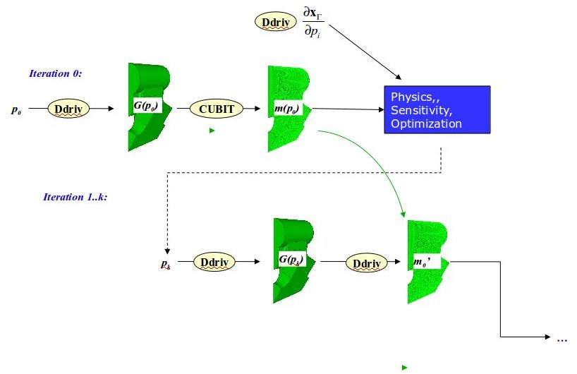
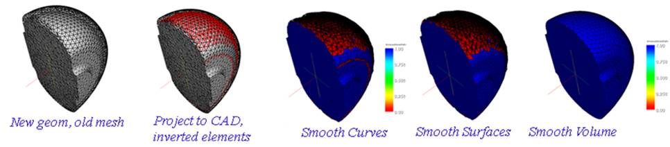

Geometry and Meshing Support for Shape Optimization
Geometric shape optimization is a powerful capability with applications in accelerator cavity design and other areas. Shape optimization requires a diverse set of supporting services involving both geometric (CAD) models and mesh handling. These services must be automated, to enable the optimization process to iterate without human intervention.A service supporting CAD-based shape optimization has been developed under ITAPS. The approach taken is shown below. In iteration 0, the tool starts with a parameter vector p0, and generates a geometric model G(p0); generates a mesh m(p0) using the CUBIT mesh generation tool based on that geometric model; and generates a sensitivity or derivative vector d(x)/dp. The resulting mesh and sensitivities are input to the physics and optimization procedure, which generate a new parameter vector vk. In subsequent iterations, the new parameter vector is used to generate a new geometric model G(pk), and a mesh for that model is derived from the original mesh, m(p0), by projecting boundary vertices to the new geometry and smoothing. Geometry and mesh models are represented using the CGM and MOAB libraries, respectively. Mesh generation is performed using the mesh generation toolkit, and mesh smoothing using the Mesquite mesh improvement library. Generation of a geometric model given a parameter vector, computing the sensitivities with respect to parameters, and coordination of the mesh projection process is performed by the DDRIV code library and executable driver. DDRIV is available as open source software from Argonne National Laboratory.

Steps in this process are shown with an actual model below.
|  |
|---|
In the approach above, a finite difference method is used to compute the change in vertex positions with respect to parameters. The convergence of this method has been tested by varying both the number of mesh elements and the size of parameter variations. The derivative converged quickly in both cases, verifying that a finite difference-based method is appropriate.
In the longer term, methods for treating larger parameter variations, leading to topological changes to the underlying geometric model, should be investigated. This may require the introduction of re-meshing and/or local mesh topological changes to the process to improve mesh quality. This research could use the dynamic mesh services, parallel mesh generation, and parallel deforming mesh capabilities developed under ITAPS. DDRIV is available as open source software; contact Tim Tautges (tautges at mcs.anl.gov) for details.